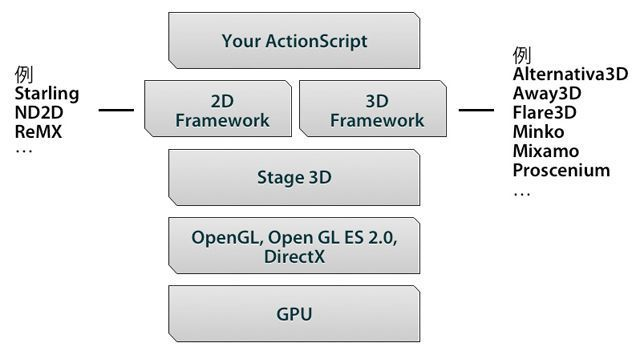
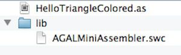
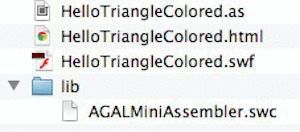
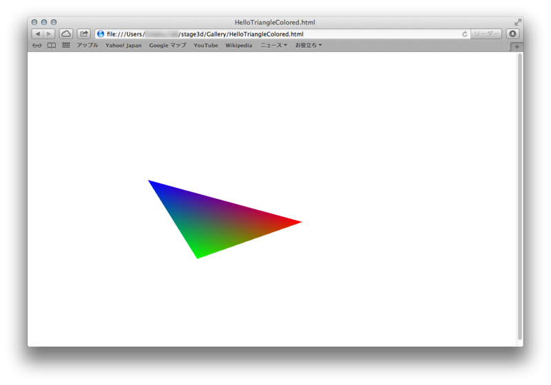
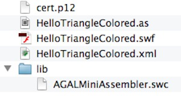
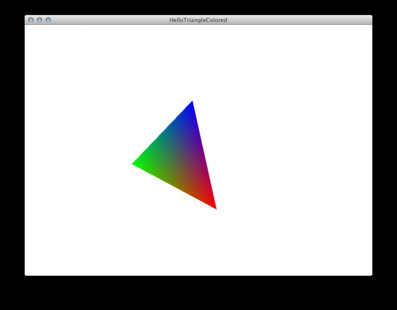

Stage3Dを使ったFlash/AIRをmxmlcでビルドする方法

Stage3Dを使ったFlashを FlashBuilderを使わずに 作ろうと思ったのですが、あまり良くまとめられているブログがなかったので、自分なりにまとめてみます。
Stage3Dとは
まずStage3Dとは、Flash/AIRの長年の弱点であった、GPUアクセラレーションを提供する機能です。わかりやすく言えば、HTML5におけるWebGLのFlash版です。Flash Player 11から利用できます。

手順
まず、FlashBuilderを使わずにswfをコンパイルするためには、まずFlex SDKが必要なので、Download Adobe Flex SDKからダウンロードします。
※ なお、Macをもとに説明しますので、Windowsでは適宜読み替えてください。
ダウンロードしたファイルは解答し、~/Library/Flex/flex_sdk_xxx/ などにコピーします。（最近のWindowsはあまりわからないのですが、適当な場所にコピーして下さい。）
flex_sdk_xxx/bin には、mxmlcなどの重要な実行ファイルがあるので、パスを通しておきます。
これで準備は完了です。
swfのコンパイル
適当なフォルダを作り、例えば HelloTriangleColored.as というファイルを以下の内容で作成します。
package
{
import com.adobe.utils.AGALMiniAssembler;
import flash.display.Sprite;
import flash.display3D.Context3D;
import flash.display3D.Context3DProgramType;
import flash.display3D.Context3DVertexBufferFormat;
import flash.display3D.IndexBuffer3D;
import flash.display3D.Program3D;
import flash.display3D.VertexBuffer3D;
import flash.events.Event;
import flash.geom.Matrix3D;
import flash.geom.Rectangle;
import flash.geom.Vector3D;
import flash.utils.getTimer;
[SWF(width="800", height="600", frameRate="60", backgroundColor="#FFFFFF")]
public class HelloTriangleColored extends Sprite
{
protected var context3D:Context3D;
protected var program:Program3D;
protected var vertexbuffer:VertexBuffer3D;
protected var indexbuffer:IndexBuffer3D;
public function HelloTriangleColored()
{
stage.stage3Ds[0].addEventListener( Event.CONTEXT3D_CREATE, initMolehill );
stage.stage3Ds[0].requestContext3D();
addEventListener(Event.ENTER_FRAME, onRender);
}
protected function initMolehill(e:Event):void
{
context3D = stage.stage3Ds[0].context3D;
context3D.configureBackBuffer(800, 600, 1, true);
var vertices:Vector.<Number> = Vector.<Number>([
-0.3,-0.3,0, 1, 0, 0, // x, y, z, r, g, b
-0.3, 0.3, 0, 0, 1, 0,
0.3, 0.3, 0, 0, 0, 1]);
// Create VertexBuffer3D. 3 vertices, of 6 Numbers each
vertexbuffer = context3D.createVertexBuffer(3, 6);
// Upload VertexBuffer3D to GPU. Offset 0, 3 vertices
vertexbuffer.uploadFromVector(vertices, 0, 3);
var indices:Vector.<uint> = Vector.<uint>([0, 1, 2]);
// Create IndexBuffer3D. Total of 3 indices. 1 triangle of 3 vertices
indexbuffer = context3D.createIndexBuffer(3);
// Upload IndexBuffer3D to GPU. Offset 0, count 3
indexbuffer.uploadFromVector (indices, 0, 3);
var vertexShaderAssembler : AGALMiniAssembler = new AGALMiniAssembler();
vertexShaderAssembler.assemble( Context3DProgramType.VERTEX,
"m44 op, va0, vc0\n" + // pos to clipspace
"mov v0, va1" // copy color
);
var fragmentShaderAssembler : AGALMiniAssembler= new AGALMiniAssembler();
fragmentShaderAssembler.assemble( Context3DProgramType.FRAGMENT,
"mov oc, v0"
);
program = context3D.createProgram();
program.upload( vertexShaderAssembler.agalcode, fragmentShaderAssembler.agalcode);
}
protected function onRender(e:Event):void
{
if ( !context3D )
return;
context3D.clear ( 1, 1, 1, 1 );
// vertex position to attribute register 0
context3D.setVertexBufferAt (0, vertexbuffer, 0, Context3DVertexBufferFormat.FLOAT_3);
// color to attribute register 1
context3D.setVertexBufferAt(1, vertexbuffer, 3, Context3DVertexBufferFormat.FLOAT_3);
// assign shader program
context3D.setProgram(program);
var m:Matrix3D = new Matrix3D();
m.appendRotation(getTimer()/40, Vector3D.Z_AXIS);
context3D.setProgramConstantsFromMatrix(Context3DProgramType.VERTEX, 0, m, true);
context3D.drawTriangles(indexbuffer);
context3D.present();
}
}
}このファイルをswfにコンパイルするためには、このソースコードが配置されているフォルダにおいて、
libというフォルダを作り、
lib以下にAGALMinimalAssembler.swcを設置（イメージは下図）

という作業を行った上で、ターミナルで次のように入力します。
mxmlc -library-path+=lib HelloTriangleColored.asこれでフォルダに HelloTriangleColored.swfが出力されます。
ブラウザで確認するには、同フォルダにindex.htmlを以下の内容で作成します((スタンドアロンのFlashPlayerを利用することもできます： http://www.adobe.com/jp/support/flashplayer/downloads.html の下部))。
<!DOCTYPE html>
<html lang="en">
<head>
<meta charset="UTF-8">
<title></title>
</head>
<body>
<embed src="HelloTriangleColored.swf" wmode="direct" width="800" height="600">
</body>
</html>
http://get.adobe.com/jp/flashplayer/からFlashPlayer11をインストールし、htmlファイルをブラウザにドロップすると実行されます。実行結果は以下のとおりです。

AIRインストーラの作成
AIRの場合は少し手順が増えます。
まずAdobe AIRをインストールします。
次に、mxmlcによるコンパイルは次のように変わります。
amxmlc -library-path+=lib HelloTriangleColored.asamxmlc は、mxmlc +configname=air でも大丈夫のようです（自分の環境ではFlashと同じコンパイルでも大丈夫でしたが、念のためコンパイルし直す方が良いと思います）。ちなみに出力されるファイルは、先ほどと同じようにswfファイルになります。
このswfを利用してairファイルを作成するには、証明書と専用のXMLが必要になります。
次に証明書を作成します。今回は動かすだけなので、自己署名入り証明書を作成します（詳しくはAIRアプリケーションへの署名を参照）。
adt -certificate -cn SelfSign -c JP 2048-RSA cert.p12 passwordこれでcert.p12という証明書が作成できたので、次にHelloTriangleColored.xmlを以下の内容で作成します。
<?xml version="1.0" encoding="utf-8" ?>
<application xmlns="http://ns.adobe.com/air/application/3.1">
<id>com.example.HelloAir</id>
<versionNumber>0.0.1</versionNumber>
<filename>HelloTriangleColored</filename>
<name>HelloTriangleColored</name>
<description>
<text xml:lang="en">This is a example.</text>
<text xml:lang="fr">C'est un exemple.</text>
<text xml:lang="es">Esto es un ejemplo.</text>
</description>
<copyright>Copyright (c) 2013 Example Co.</copyright>
<initialWindow>
<renderMode>direct</renderMode>
<title>HelloTriangleColored</title>
<content>
HelloTriangleColored.swf
</content>
<systemChrome>standard</systemChrome>
<transparent>false</transparent>
<visible>true</visible>
<minimizable>true</minimizable>
<maximizable>false</maximizable>
<resizable>true</resizable>
<width>800</width>
<height>600</height>
<minSize>300 300</minSize>
<maxSize>800 600</maxSize>
</initialWindow>
<installFolder>HelloTriangleColored</installFolder>
<programMenuFolder>HelloTriangleColored</programMenuFolder>
</application>ポイントは、
1) <application xmlns="http://ns.adobe.com/air/application/3.1">
2) <renderMode>direct<renderMode>
3) <systemChrome>standard</systemChrome>
<transparent>false</transparent>の３箇所です（参考：AIRウィンドウの基礎、Build FlashPlayer 11 AS with FlashDevelop）。
ここまでのファイル階層は、次のようになります。

あとはこれらの証明書とxml、そしてswfファイルを使ってairファイルを生成します。
adt -package -storetype pkcs12 -keystore cert.p12 HelloTriangleColored.air HelloTriangleColored.xml HelloTriangleColored.swf実行結果は次のとおりです。

まとめ
以上がFlash Builderを使わずにFlash/AIRをビルドする方法でした。
ファイルが大きくなってくるとビルドが遅くなるので、fcshやrascutを使うといいかもしれないですね。
あと余談ですが、mxmlを使ったFlexアプリケーションも同じ手順でビルドできます。
追記
今度はAway3DやAltanativa3D、Starling Framework（2D+GPU）を試してみたいですね。
あと、http://wonderfl.net/tag/Stage3D は面白かったです。
[asin:4862671292:detail]
 | CSSだけで美しいレスポンシブデザインを実現『Pure』 |
 | 静的サイトジェネレータ『Octopress』の使い方 |
 | 完全に無料なGithubブログを始める方法 |
 | 無料ブログサービスの大きな落とし穴 |
 | PHPの動的キャストで完全にハマった |